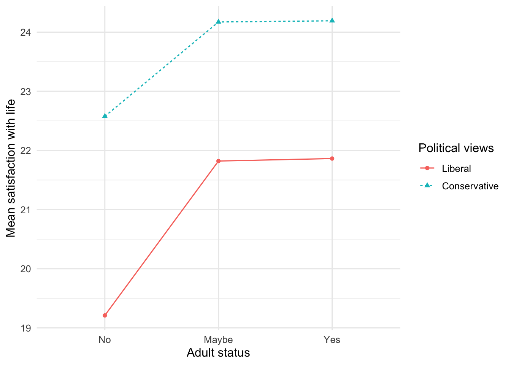

source("scripts/_setup.R")Chapter 13: Two-Way Independent Analysis of Variance
Main effects and interactions
Use two-way independent ANOVA to test main effects and interactions.
Chapter 13 of Exploring Statistics introduces two-way independent analysis of variance. A two-way ANOVA fits three questions into one model: one main effect for each independent variable and an interaction asking whether the pattern for one independent variable depends on the level of the other.
Learning Goals
By the end of this chapter, you should be able to:
- identify the dependent variable and both independent variables;
- distinguish main effects from interactions;
- check the assumptions of a two-way ANOVA;
- conduct and interpret a two-way ANOVA;
- use post hoc tests when they are needed; and
- write a cautious conclusion.
Research Questions
- Does satisfaction with life differ by political views, adult status, or the combination of political views and adult status?
- Does social support differ by political views, adult status, or the combination of political views and adult status?
Before You Begin
You will reuse aov(), TukeyHSD(), bartlett.test(), shapiro.test(), grouped summaries, and formula syntax. New patterns include predictor_1 * predictor_2, combining groups for an assumption check, and an interaction plot.
Research Question 1: Satisfaction With Life, Political Views, And Adult Status
Previous research has found that conservatives tend to report greater satisfaction with life than liberals. We will examine whether that pattern appears in EAMMi2 and whether it depends on adult status.
Plan The Analysis
| Variable | What it measures | Type | Role |
|---|---|---|---|
SWLS |
satisfaction with life | quantitative | dependent variable |
PoliticsDichotomous |
liberal or conservative views | categorical | independent variable |
Adult |
adult status | categorical | independent variable |
Before running the analysis, write a null and alternative hypothesis for each of the three tests:
- Political-views main effect: Do liberals and conservatives differ in satisfaction with life?
- Adult-status main effect: Does satisfaction with life differ among people who answered no, maybe, or yes?
- Interaction: Does the difference between liberals and conservatives depend on adult status?
The interaction question asks whether the political-views difference is the same across the three adult-status groups.
Get Ready
Open 13-two-way-anova.R, run the setup line, and then run one section at a time.
eammi <- eammi |>
mutate(
PoliticsDichotomous = factor(
PoliticsDichotomous,
levels = c(1, 2),
labels = c("Liberal", "Conservative")
),
Adult = factor(
Adult,
levels = c(3, 2, 1),
labels = c("No", "Maybe", "Yes")
)
)
swls_data <- eammi |>
drop_na(SWLS, PoliticsDichotomous, Adult)Run The Model
The formula for a two-way ANOVA shows the dependent variable on the left and both independent variables on the right.
swls_anova <- aov(
SWLS ~ PoliticsDichotomous * Adult,
data = swls_data,
contrasts = list(
PoliticsDichotomous = contr.sum,
Adult = contr.sum
)
)In SWLS ~ PoliticsDichotomous * Adult:
SWLSis the dependent variable;PoliticsDichotomousandAdultare the two independent variables; and*tells R to test both main effects and the interaction between them.
The model is stored as swls_anova. The contrasts lines tell R how to compare the categories when the six groups contain different numbers of participants.
Check The Assumptions
bartlett.test(
SWLS ~ interaction(PoliticsDichotomous, Adult),
data = swls_data
)
Bartlett test of homogeneity of variances
data: SWLS by interaction(PoliticsDichotomous, Adult)
Bartlett's K-squared = 4.12, df = 5, p-value = 0.5323interaction() combines the independent variables into six groups. Here, Bartlett’s p value is greater than .05, so the homogeneity assumption is met.
shapiro.test(residuals(swls_anova))
Shapiro-Wilk normality test
data: residuals(swls_anova)
W = 0.97518, p-value = 2.192e-14Residuals are differences between observed and model-predicted scores. residuals(swls_anova) retrieves those differences from the model fitted above. They differ significantly from normal. Because the sample is large and SWLS is not severely skewed, we proceed but remember this result.
Run The Analysis
swls_cell_summary <- swls_data |>
group_by(Adult, PoliticsDichotomous) |>
summarise(
N = n(),
Mean = mean(SWLS),
SD = sd(SWLS),
SE = SD / sqrt(N),
.groups = "drop"
)
swls_cell_summary# A tibble: 6 × 6
Adult PoliticsDichotomous N Mean SD SE
<fct> <fct> <int> <dbl> <dbl> <dbl>
1 No Liberal 81 19.2 7.20 0.800
2 No Conservative 33 22.6 6.42 1.12
3 Maybe Liberal 268 21.8 6.59 0.402
4 Maybe Conservative 93 24.2 6.77 0.702
5 Yes Liberal 547 21.9 7.20 0.308
6 Yes Conservative 312 24.2 6.73 0.381Crossing two political categories with three adult-status categories creates six groups. The summary table gives the sample size, mean, standard deviation, and standard error for each group.
The ANOVA model was already fitted and stored as swls_anova. The next code does not specify the model again. Instead, two_way_anova_table() takes that fitted model and organizes its results into a table containing the two main effects, the interaction, and partial eta squared. This function is supplied by the setup file.
swls_anova_table <- two_way_anova_table(swls_anova)
swls_anova_table Effect Df SumOfSquares F p
1 PoliticsDichotomous 1 1041.49049 21.7381907 3.439891e-06
2 Adult 2 390.25401 4.0727286 1.724403e-02
3 PoliticsDichotomous:Adult 2 22.93445 0.2393462 7.871763e-01
PartialEtaSquared
1 0.0161054869
2 0.0060962353
3 0.0003603312At first glance, the output table can seem confusing. It provides the results of three separate tests:
- The
PoliticsDichotomousrow tests whether satisfaction with life differs between liberals and conservatives. - The
Adultrow tests whether satisfaction with life differs across the no, maybe, and yes groups. - The
PoliticsDichotomous:Adultrow tests whether the political-views difference depends on adult status. The colon (:) identifies the interaction in the output.
Inspect And Interpret
Read a two-way table in this order:
- Inspect the interaction.
- If the interaction is not significant, interpret each main effect.
- Use post hoc comparisons for a significant factor with more than two levels.
- Compare the table with the cell means and interaction plot.
The interaction is not significant, so the political difference does not appear to depend on adult status. Both main effects are significant. Conservatives reported higher satisfaction than liberals. Adult status has three levels, so compare its groups.
swls_adult_tukey <- TukeyHSD(swls_anova, "Adult")
swls_adult_tukey Tukey multiple comparisons of means
95% family-wise confidence level
Fit: aov(formula = SWLS ~ PoliticsDichotomous * Adult, data = swls_data, contrasts = list(PoliticsDichotomous = contr.sum, Adult = contr.sum))
$Adult
diff lwr upr p adj
Maybe-No 2.32061155 0.5758061 4.065417 0.0052359
Yes-No 2.34367025 0.7247940 3.962546 0.0020269
Yes-Maybe 0.02305871 -0.9956170 1.041734 0.9984460swls_adult_pairwise_d <- tukey_cohens_d(
swls_anova,
swls_adult_tukey,
"Adult"
)
swls_adult_pairwise_d# A tibble: 3 × 2
Comparison CohensD
<chr> <dbl>
1 Maybe-No 0.335
2 Yes-No 0.339
3 Yes-Maybe 0.00333Participants answering yes or maybe reported higher satisfaction than those answering no. The yes and maybe groups did not differ.
swls_cell_summary |>
ggplot(aes(
x = Adult,
y = Mean,
group = PoliticsDichotomous,
color = PoliticsDichotomous,
linetype = PoliticsDichotomous,
shape = PoliticsDichotomous
)) +
geom_point() +
geom_line() +
labs(
x = "Adult status",
y = "Mean satisfaction with life",
color = "Political views",
linetype = "Political views",
shape = "Political views"
)
Produce a conclusion that reports all three tests and the necessary post hoc comparisons.
Check Your Work
Research Question 1
The independent variables are political views and adult status; the dependent variable is satisfaction with life.
The null hypotheses state that conservatives and liberals do not differ, the three adult-status means do not differ, and political views and adult status do not interact:
\[H_0: \mu_{\text{conservative}} = \mu_{\text{liberal}}\]
\[H_0: \mu_{\text{yes}} = \mu_{\text{maybe}} = \mu_{\text{no}}\]
The alternative hypotheses state that political groups differ, at least one adult-status mean differs, and political views and adult status interact.
A 2 x 3 two-way independent ANOVA found a significant political main effect: conservatives reported greater satisfaction than liberals, F(1, 1328) = 21.74, p < .001, partial η² = .02. Adult status also had a significant main effect, F(2, 1328) = 4.07, p = .017, partial η² = .006. Yes exceeded no, p = .002, d = 0.34; maybe exceeded no, p = .005, d = 0.34; and yes did not differ from maybe, p = .998, d = 0.003. The interaction was not significant, F(2, 1328) = 0.24, p = .79, partial η² < .001.
Research Question 2
social_support_data <- eammi |>
drop_na(SocialSupport, PoliticsDichotomous, Adult)
bartlett.test(
SocialSupport ~ interaction(PoliticsDichotomous, Adult),
data = social_support_data
)
Bartlett test of homogeneity of variances
data: SocialSupport by interaction(PoliticsDichotomous, Adult)
Bartlett's K-squared = 16.588, df = 5, p-value = 0.005352social_support_anova <- aov(
SocialSupport ~ PoliticsDichotomous * Adult,
data = social_support_data,
contrasts = list(
PoliticsDichotomous = contr.sum,
Adult = contr.sum
)
)
shapiro.test(residuals(social_support_anova))
Shapiro-Wilk normality test
data: residuals(social_support_anova)
W = 0.92614, p-value < 2.2e-16social_support_cell_summary <- social_support_data |>
group_by(Adult, PoliticsDichotomous) |>
summarise(
N = n(), Mean = mean(SocialSupport), SD = sd(SocialSupport),
SE = SD / sqrt(N), .groups = "drop"
)
social_support_anova_table <- two_way_anova_table(social_support_anova)
social_support_cell_summary# A tibble: 6 × 6
Adult PoliticsDichotomous N Mean SD SE
<fct> <fct> <int> <dbl> <dbl> <dbl>
1 No Liberal 81 62.7 14.4 1.60
2 No Conservative 33 68 11.6 2.02
3 Maybe Liberal 268 67.5 11.5 0.704
4 Maybe Conservative 93 66.8 13.9 1.44
5 Yes Liberal 547 66.4 13.1 0.559
6 Yes Conservative 312 68.1 14.4 0.814social_support_anova_table Effect Df SumOfSquares F p
1 PoliticsDichotomous 1 650.2719 3.724754 0.0538243
2 Adult 2 308.9036 0.884699 0.4130816
3 PoliticsDichotomous:Adult 2 663.0691 1.899028 0.1501204
PartialEtaSquared
1 0.002796940
2 0.001330605
3 0.002851826The homogeneity assumption was not met and residuals differed significantly from normal, so interpret cautiously. The interaction was not significant, F(2, 1328) = 1.90, p = .15, partial η² = .003. Neither adult status, F(2, 1328) = 0.88, p = .41, partial η² = .001, nor political views, F(1, 1328) = 3.72, p = .054, partial η² = .003, had a significant main effect. Post hoc tests are unnecessary.
social_support_cell_summary |>
ggplot(aes(
x = Adult,
y = Mean,
group = PoliticsDichotomous,
color = PoliticsDichotomous,
linetype = PoliticsDichotomous,
shape = PoliticsDichotomous
)) +
geom_point() +
geom_line() +
labs(
x = "Adult status",
y = "Mean social support",
color = "Political views",
linetype = "Political views",
shape = "Political views"
)Chapter Takeaway
A two-way independent ANOVA tests two main effects and one interaction. Interpret the interaction first because a meaningful interaction changes how the main effects should be understood.
R Skills Practiced
bartlett.test()andshapiro.test()repeat the assumption checks introduced in Chapters 10 and 11.interaction()combines grouping variables for an assumption check.predictor_1 * predictor_2requests both main effects and the interaction.two_way_anova_table()is supplied by the setup file and reports the two-way tests and partial eta squared from a fitted model.geom_line()connects means in an interaction plot.